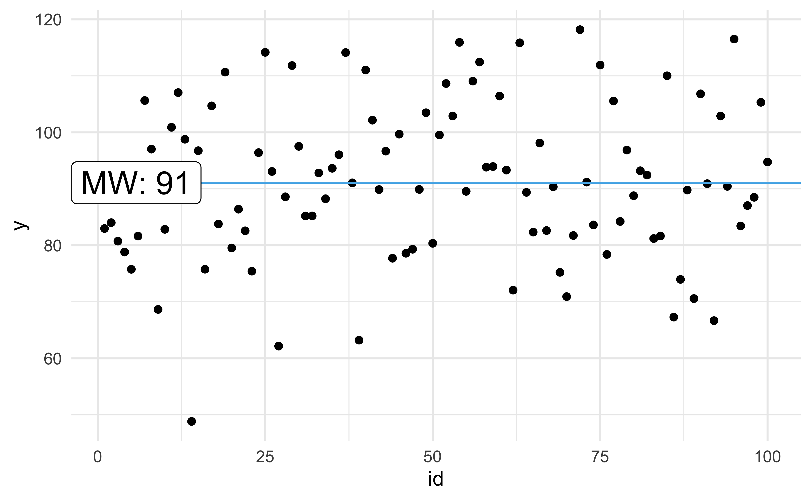
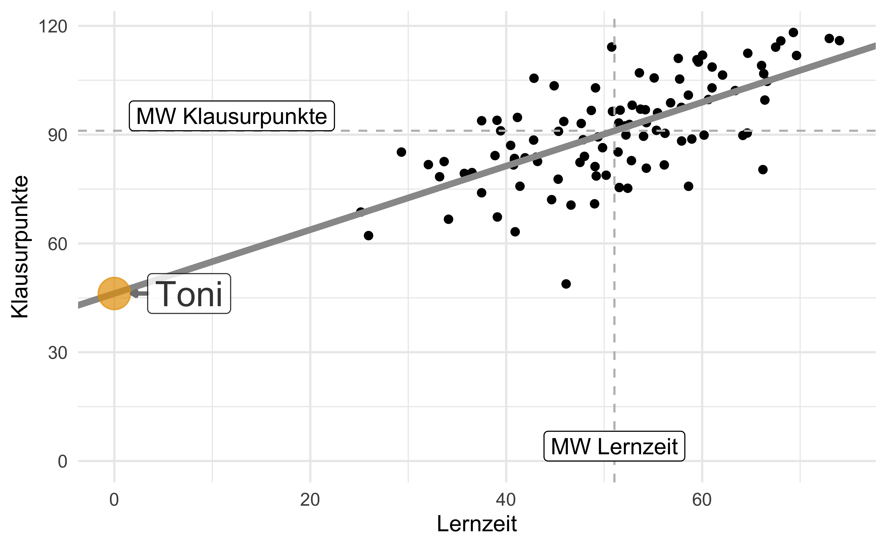
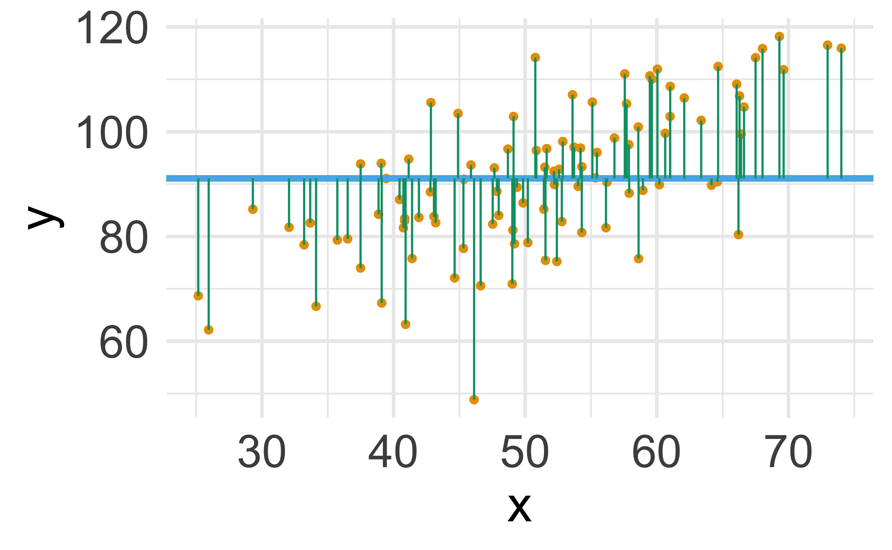

10 Geradenmodelle 1
10.1 Lernsteuerung
10.1.1 Standort im Lernpfad
Abb. Abbildung 1.2 zeigt den Standort dieses Kapitels im Lernpfad und gibt damit einen Überblick über das Thema dieses Kapitels im Kontext aller Kapitel.
10.1.2 Lernziele
- Sie können ein Punktmodell von einem Geradenmodell begrifflich unterscheiden.
- Sie können die Bestandteile eines Geradenmodells aufzählen und erläutern.
- Sie können die Güte eines Geradenmodells anhand von Kennzahlen bestimmen.
- Sie können Geradenmodelle sowie ihre Modellgüte in R berechnen.
10.1.3 Benötigte R-Pakete
10.1.4 Benötigte Daten
mariokart <- read.csv("https://vincentarelbundock.github.io/Rdatasets/csv/openintro/mariokart.csv")10.2 Vorhersagen
Vorhersagen sind eine nützlich Sache, unter (mindestens) folgenden Voraussetzungen:
- Sie sind präzise
- Wir kennen die Präzision
- Jemand interessiert sich für die Vorhersage
Die Methode des Vorhersagens, die wir hier betrachten, nennt man auch lineare Regression.
10.2.1 Vorhersagen ohne Prädiktor
Beispiel 10.1 Nach intensiver Beschäftigung mit Statistik sind Sie allgemein als Checker bekannt. Viele jüngere Studentis fragen Sie um Rat. eines Tages kommt ei Studenti, Toni, und fragt: “Welche Statistiknote kann ich in der Klausur erwarten?” Sie entgegnen: “Wie viel hast du denn gelernt?”. Die Antwort: “Sag ich nicht.”
Nach kurzem Überlegen geben sie den Notenschnitt der letzten Klausur als Prognose für dis Studenti. Dazu rechnen Sie schnell den Notenschnitt (Mittelwert aus).
Zuerst importieren Sie die Daten der letzten Klausur1:
noten2 <- read.csv("daten/noten2.csv")Dann rechnen Sie den Mittelwert aus:
Ihre Antwort lautet also: “Im Schnitt haben die Studis bei der letzten Klausur gut 50% der Punkte erzielt. Diesen Wert kannst du erwarten. Solange ich keine genaueren Infos habe, z.B. wieviel du gelernt hast, kann ich dir keine genauere Vorherage machen, sorry!”\(\square\)
Ohne Kenntnis eines Prädiktors (UV) (wie z.B. Lernzeit) ist der Mittelwert ein geeigneter Vorhersagewert für jede Beobachtung, s. Abbildung 10.1. Wir nutzen den Mittelwert als Punktmodell für den Klausurerfolg.\(\square\)

10.2.2 Nullmodell
Modelle ohne Prädiktor, Punktmodelle also, kann man so bezeichnen: y ~ 1. Da es null Prädiktoren hat, nennt man es auch manchmal “Nullmodell”.
Auf Errisch kann man dieses Nullmodell so spezifizieren:
lm0 <- lm(y ~ 1, data = noten2)
lm0
##
## Call:
## lm(formula = y ~ 1, data = noten2)
##
## Coefficients:
## (Intercept)
## 71.08lm steht für “lineares Modell”, die 0 sagt, dass es keine Prädiktoren gibt. In dem Fall wird der Mittelwert als Gerade verwendet. Der zurückgemeldete Koeffizient (Intercept) ist hier der Modell des Punktmodells. Da es ein Punktmodell ist, sagt es für alle Beobachtungen (hier Studentis) den gleichen Wert vorher.
Die Regressionsgleichung lautet demnach: y_pred = 71.08. In Worten: “Wir sagen von jede Beobachtung einen Wert von ca. 71 vorher”.
10.2.3 Vorhersagen mit Prädiktor
Beispiel 10.2 (Toni verrät die Lernzeit) Dis Studenti, Toni, entschließt sich dann doch noch, die Lernzeit zu verraten: “Okay, also ich hab insgesamt 42 Stunden gelernt, insgesamt.” Jetzt müssen Sie erstmal nachdenken: “Wie viele Klausurpunkte sag ich vorher, wenn Toni 42 gelernt hat?”
Sie visualisieren sich zur Hilfe die vorliegenden Daten, s. Abbildung 10.2, links.
noten2 <- read.csv(noten2, "daten/noten2.csv")
library(DataExplorer)
noten2 %>%
plot_scatterplot(by = "y") # Y-Variable muss angegeben werdenAuf dieser Basis antworten Sie Toni: “Bei 42 Stunden Lernzeit solltest du so 46 Punkte bekommen. Könnte mit dem Bestehen eng werden.” Toni ist nicht begeistert von Ihrer Prognose und zieht von dannen.\(\square\)
Der Trend (im Sinne eines linearen Zusammenhangs) von Lernzeiten und Klausurpunkte ist deutlich zu erkennen. Mit einem Lineal könnte man eine entsprechende Gerade in das Streudiagramm einzeichnen, s. Abbildung 10.2.


Eine Gerade eignet sich, um einen linearen Trend zusammenzufassen.
10.3 Geradenmodelle
10.3.1 Achsenabschnitt und Steigung definieren eine Gerade
Wir verwenden eine Gerade als Modell für die Daten, s. Abbildung 10.2, rechts. Anders gesagt: Wir modellieren die X-Y-Daten (bzw. ihren Zusammenhang) mit einem Geradenmodell.
Ein Geradenmodell ist eine Verallgemeinerung des Punktmodells: Ein Punktmodell sagt für alle Beobachtungen den gleichen Wert vorher. Abbildung 10.1 und Abbildung 10.2 stellen ein Punktmodell einem Geradenmodell gegenüber.
In einem Geradenmodell wird nicht mehr (notwendig) für jede Beobachtung die gleiche Vorhersage \(\hat{y}\) gemacht (wie das bei einem Punktmodell der Fall ist).
Definition 10.1 Eine Gerade ist definiert durch zwei Koeffizienten: Achsenabschnitt (engl. intercept), und Steigung (engl. slope). Häufig wird (z.B. im Schulunterricht) der Achsenabschnitt mit \(t\) und die Steigung mit \(m\) bezeichnet: \(f(x)=y=\color{blue}[m]x + \color{red}[t]\). In der Statistik wird folgende Nomenklatur bevorzugt: \(f(x)=\hat{y} = \color{red}{b_0} + \color{blue}{b_1}x\) oder \(y = \color{red}{\beta_0} + \color{blue}{\beta_1}x\) .2
Abbildung 10.3 skizziert die Elemente einer Regression.

Bildquelle: Basierend auf diesem Diagramm von Henri Menke
Je nach Datenlage können sich Regressionsgerade in Steigung oder Achsenabschnitt unterscheiden, s. Abbildung 10.4.


Beispiel 10.3 (Toni will es genau wissen) Da Toni Sie als Statistik-Profi abgespeichert hat, werden Sie wieder konsultiert. “Okay, ich hab noch zwei Fragen. Erstens: Wie viele Punkte bekomme ich, wenn ich gar nicht lerne? Zweitens, wie viele Punkte bekomme ich pro gelernte Stunde? Ist immerhin meine Lebenszeit, krieg ich nicht zurück!”
Das sind gute Fragen. Den Y-Wert (Klausurpunkte) bei \(X=0\) gibt der Achsenabschnitt zurück. Schnell skizzieren Sie dazu ein Diagramm, s. Abbildung 10.5. Puh, die Antwort wird Toni nicht gefallen …

Anstelle auf Abbildung 10.5 zu schauen, können Sie sich auch von R Tonis Klausurerfolg vorhersagen (to predict) lassen:
üßë‚Äçüéì Hey R, predicte mir mal auf Basis vom Modell ‚Äúlm1‚Äù den Lernerfolg f√ºr Toni, wenn der x=0 Stunden lernt.
ü§ñ Okay, ich predicte mit Modell ‚Äúlm1‚Äù und nehme als neue Datentabelle Tonis Lernzeit (x=0)!
tonis_lernzeit <- tibble(x = 0)
tonis_lernzeitpredict(lm1, newdata = tonis_lernzeit)
## 1
## 0.0469259210.3.2 Spezifikation eines Geradenmodells
Ein Geradenmodell kann man im einfachsten Fall so spezifizieren, s. Gleichung 10.1:
\[\hat{y} \sim x \tag{10.1}\]
Lies: “Laut meinem Modell ist \(\hat{y}\) irgendeine Funktion von \(y\)”. Wir werden als Funktion (erstmal) nur Geraden verwenden. Die genauen Werte der Gerade lassen wir uns (erstmal) vom Computer ausrechnen.
Gleichung 10.1 können Sie so ins Errische übersetzen:
lm(y ~ x, data = meine_daten)lm steht für “lineares Modell”, also eine Gerade als Modell. Die Gerade nennt man auch Regressionsgerade3.
Beispiel 10.4 (Zahlen für Toni) Toni ist nicht zufrieden mit Ihren Vorhersagen: “Jetzt hör mal auf mit deinem Lineal hier herum zu malen. Ich will es genau wissen, sag mir präzise Zahlen!”.
lm1 <- lm(y ~ x, data = noten2)
lm1
##
## Call:
## lm(formula = y ~ x, data = noten2)
##
## Coefficients:
## (Intercept) x
## 8.6030 0.8794R gibt Ihnen die beiden Koeffizienten für die Gerade aus. Den Namen des Objekts können Sie frei aussuchen, z.B. mein_erstes_lm.
Die Regressionsgleichung lautet demnach: y_pred = 8.6 + 0.88*x
Mit Kenntnis der beiden Koeffizienten kann man beliebige Y-Werte ausrechnen gegeben bestimmte X-Werte.
Hat jemand zum Beispiel 10 Stunden gelernt, würden wir folgendes Klausurergebnis vorhersagen:
lernzeit <- 10
y_pred <- 8.6 + 0.88*lernzeit
y_pred
## [1] 17.4Beispiel 10.5 (Vorhersage für Klausurerfolg, nächster Versuch) Sie versuchen, noch etwas Gutes für Toni zu tun. R hilft Ihnen dabei und rechnet die erwartete Punktzahl aus, wenn Toni 73 Stunden lernt. Sie dürfen es aber auch selber rechnen, wenn Ihnen das lieber ist.
tonis_lernzeit2 <- tibble(x = 73)predict(lm1, newdata = tonis_lernzeit2)
## 1
## 72.7999Die Syntax von predict lautet:
predict(name_des_objekts, newdata = tabelle_mit_prädiktorwerten)Mit predict bekommt man eine Vorhersage; im Standard eine “Punkt-Vorhersage”, eine einzelne Zahl.\(\square\)
10.3.3 Vorhersagefehler
Die Differenz zwischen vorhergesagten Wert für eine (neue) Beobachtung, \(\hat{y_0}\) und ihrem tatsächlichen Wert nennt man Vorhersagefehler (error, \(e_i\)) oder Residuum: \(e_i = y_i - \hat{y}_i\).


Wie ist es mit den Vorhersagefehlern von beiden Modellen bestellt?
Lassen wir uns von R die Streuung (Residuen) in Form der mittleren Absolutabweichung (MAE) ausgeben4:
mae(lm0)
## [1] 11.18385
mae(lm1)
## [1] 7.954085Vergleichen wir MAE im Nullmodell mit MAE in lm1:
verhaeltnis_fehler_gerade_zu_punkt_mae <- mae(lm1) / mae(lm0)
verhaeltnis_fehler_gerade_zu_punkt_mae
## [1] 0.7112118Ah! Das Geradenmodell ist viel besser: Von lm0 zu lm1 haben die mittlere (Absolut-)Länge des Fehlerbalkens auf 71 Prozent verbessert. Nicht schlecht!
Definition 10.2 (Fehlerstreuung) Als Fehlerstreuung bezeichnen wir die Gesamtheit der Abweichungen der beobachteten Werte (\(y_i\)) vom vorhergesagten Wert (\(\hat{y}_i\)).\(\square\)
Zur Berechnung der Fehlerstreuung gibt es mehrere Kenngrößen wie MAE oder MSE.
Ein Geradenmodell ist immer besser als ein Punktmodell (im Hinblick auf die Verringerung der Fehlerstreung), solange X mit Y korreliert ist.\(\square\)
Natürlich können wir - in Analogie zur Varianz - auch den mittleren Quadratfehlerbalken (Mean Squared Error, MSE) berechnen5.
mse(lm0)
## [1] 192.7863
mse(lm1)
## [1] 106.4519verhaeltnis_fehler_gerade_zu_punkt_mse <- mse(lm1)/mse(lm0)
verhaeltnis_fehler_gerade_zu_punkt_mse
## [1] 0.552175510.3.4 Berechnung der Modellkoeffizienten
Aber wie legt man die Regressionsgerade in das Streudiagramm, bildlich gesprochen?
Die Regressionskoeffizienten6 b0 und b1 wählt man so, dass die Residuen minimal sind. Es gibt verschiedene Algorithmen, um dies zu berechnen7. Eine schöne Darstellung dazu findet sich bei Kaplan (2009).
“Von Hand” können Sie die Optimierung von b0 und b1 in dieser App der FOM-Hochschule ausprobieren.
10.4 R-Quadrat
10.4.1 R-Quadrat als Verringerung der Fehlerstreuung
Anders gesagt, wir haben uns um \(1 - 0.55\) verbessert:
1 - verhaeltnis_fehler_gerade_zu_punkt_mse
## [1] 0.4478245Definition 10.3 (R-Quadrat) Die Verringerung (als Anteil) der Fehlerstreuung der Zielvariablen von lm0 zum gerade untersuchten Modell nennt man R-Quadrat (\(R^2\)). R-Quadrat (\(R^2\)) eines Modells \(m\) ist definiert als die Verringerung der Streuung, wenn man das Modell \(m\) mit dem Nullmodell \(m_0\) vergleicht: \(R^2 =1- \frac{\text{MSE}_{m}}{\text{MSE}_{m0}}\). R-Quadrat ist ein Maß der Modellgüte: Je größer \(R^2\), desto besser die Vorhersage. Da es ein Anteilsmaß8 ist, liegt der Wertebereich zwischen 0 uns 1. Im Nullmodell liegt R-Quadrat per Definition bei 0. Im Fall von Modellen des Typs \(y\sim x\) gilt: \(R^2 = r_{xy}^2\). \(\square\)
Wir können R-Quadrat (\(R^2\)) uns von R z.B. so ausgeben lassen:
r2(lm1)
## # R2 for Linear Regression
## R2: 0.448
## adj. R2: 0.442Bei einer perfekten Korrelation ist \(r=1\), daher ist dann auch \(R^2 = 1\)9, s. Abbildung 10.7.


Bei einer perfekten Korrelation \(R^2=1\) liegen die Punkte auf der Geraden. Im gegenteiligen Extremfall von \(R^2=0\) ist die Vorhersage genauso gut, wie wenn man für jedes \(y\) den Mittelwert, \(\bar{y}\), vorhersagen würde.
Je größer R-Quadrat, desto besser erklärt das Modell die Daten (desto besser der “Fit”, sagt man).
Diese App der FOM-Hochschule erlaubt es Ihnen mit der Größe der Residuen eines linearen Modells zu spielen.
10.5 Interpretation eines Regressionsmodells
10.5.1 Modellgüte
Die Residuen (Vorhersagefehler) bestimmen die Modellgüte: Sind die Residuen im Schnitt groß, so ist die Modellgüte gering (schlecht), und umgekehrt. Verschiedenen Koeffizienten stehen zur Verfügung: R-Quadrat, r10, MSE, RMSE, MAE, …
10.5.2 Koeffizienten
Die Modellkoeffizienten, also Achsenabschnitt (\(b_0\)) und Steigung (\(b_1\)) sind nur eingeschränkt zu interpretieren, wenn man die zugrundeliegenden kausalen Abhängigkeiten nicht kennt. Nur aufgrund eines Zusammenhangs darf man keine kausalen Abhängigkeiten annehmen. Ohne eine guten Grund für eine Kausalbehauptung kann man kann nur deskriptiv argumentieren. Oder sich mit der Modellgüte und den Vorhersagen begnügen. Was auch was wert ist.
10.5.2.1 Achsenabschnitt (b0)
“Im Modell lm1 liegt der Achsenabschnitt bei \(y=8.6\). Beobachtungen mit \(x=0\) können also diesen Y-Wert erwarten.” Leider ist es häufig so, dass Prädiktorwerte von 0 in der Praxis nicht realistisch sind, so dass der Achsenabschnitt dann wenig nützt.
Beispiel 10.6 (Regression Größe und Gewicht) Nutzt man Körpergröße umd das Gewicht von Menschen vorherzusagen, ist der Achsenabschnitt von Körpergröße wenig nützlich, da es keine Menschen gibt der Größe 0.\(\square\)
10.5.2.2 Geradensteigung (b1)
“Im Modell lm1 beträgt der Regressionskoeffizient b1 \(0.88\). Zwei Studenti, deren Lernzeit sich um eine Stunde unterscheidet, unterscheiden sich laut Modell um den Wert von b1.”
Häufig liest man, der “Effekt des Prädiktors” auf die AV betrage z.B. \(0.88\). “Effekt” ist aber ein Wort, dass man kausal verstehen kann. Ohne weitere Absicherung kann man aber Regressionskoeffizienten nicht kausal verstehen. Daher sollte man das Wort “Effekt” mit Vorsicht genießen. Manche sprechen daher auch von einem “statistischen Effekt”.\(\square\).
10.6 Fallbeispiel Mariokart
Als mittlerweile anerkannter Extrem-Datenanalyst in dem Online-Auktionshaus, in dem Sie arbeiten, haben Sie sich neue Ziele gesetzt. Sie möchten eine genaue Vorhersage von Verkaufspreisen erzielen. Als Sie von diesem Plan berichteten, leuchteten die Augen Ihres Chefs. Genaue Vorhersagen, das ist etwas von hoher betriebswirtschaftlicher Relevanz. Auf geht’s!
Daten laden:11
mariokart <- read.csv("https://vincentarelbundock.github.io/Rdatasets/csv/openintro/mariokart.csv")lm2 <- lm(total_pr ~ start_pr, data = mariokart)
r2(lm2)
## # R2 for Linear Regression
## R2: 0.005
## adj. R2: -0.002Oh nein! Unterirdisch schlecht. Anstelle von bloßen Rumprobieren überlegen Sie und schauen dann in Abbildung 9.9 nach, welche Variable am stärksten korreliert mit total_pr, es resultiert lm3:
lm3 <- lm(total_pr ~ ship_pr, data = mariokart)
parameters(lm3)| Parameter | Coefficient | SE | 95% CI | t(141) | p |
|---|---|---|---|---|---|
| (Intercept) | 36.25 | 2.54 | (31.23, 41.26) | 14.28 | < .001 |
| ship pr | 4.34 | 0.57 | (3.22, 5.46) | 7.67 | < .001 |
Der Achsenabschnitt liegt bei ca. 36 Euro, wie man in Tabelle 10.1 sieht: Ein Spiel, das mit Null Euro Preis startet, kann laut lm3 etwa 36 Euro finaler Verkaufspreis erwarten. Pro Euro an Versandkosten (ship_pr) steigt der zu erwartende finale Verkaufspreis um ca. 4 Euro.12.
Die Regressionsgleichung von lm3 lautet demnach:
total_pr_pred = 36.25 + 4.34*ship_pr.
In Worten:
Der vorhergesagte Gesamptreis eines Spiels liegt bei 36.25€ “Sockelbetrag” plus 4.34 mal die Versandkosten.
Man kann sich die erwarteten Werte (“expectations”) des Verkaufspreises in Abhängigkeit vom Wert der UV (ship_pr) auch schätzen (“to estimate”) lassen, und zwar so13:
Ah, bei 4 Euro Versandkosten ist laut dem Modell knapp 54 Euro Verkaufspreis zu erwarten, fassen Sie sich die Ausgabe zusammen.
ü§ñ Das sieht man in der Spalte
Predicted, dort steht der vorhersagte Wert fürtotal_prfür einen bestimmten Wert vonship_pr.
üßë‚Äçüéì Kann ich auch
predictbenutzen? Ich würde gerne den Verkaufspreis wissen, wenn die Versandkosten bei 1 und bei 4 Euro liegen.
ü§ñ Ja, klar!
predict(lm3, newdata = neue_daten)
## 1 2
## 40.58276 53.59442Aber nützlich wäre noch, das Modell (bzw. die Schätzung der erwarteten Werte) als Diagramm zu bekommen. Das erreicht man z.B. so, s. Abbildung 11.11.

estimate_expectation heißt sinngemäß “schätze den zu erwartenden Wert”. Kurz gesagt: Wir wollen eine Vorhersage von R.
Am wichtigsten ist Ihnen aber im Moment die Frage, wie “gut” das Modell ist, spricht wie lang oder kurz die Vorhersagefehler-Balken sind:
mae(lm3)
## [1] 13.0632Das Modell erklärt einen Anteil von ca. 0.29 der Gesamtstreuung.
mae(lm3)
## [1] 13.0632Im nächsten Meeting erzählen Sie Ihrem Chef “Ich kann den Verkaufspreis von Mariokart-Spielen im Schnitt auf 13 Dollar genau vorhersagen!”. Hört sich gut an. Allerdings hätte ihr Chef es gerne genauer. Kann man da noch was machen?
10.7 Fallstudie Immobilienpreise
Diese Fallstudie stellt die Prüfungsleistung “Prognosewettbewerb” einführend dar. Es empfiehlt sich für Sie, diese Fallstudie sorgsam zu bearbeiten.\(\square\)
10.7.1 Hintergrund
In dieser Fallstudie geht es darum, die Preise von Immobilien vorherzusagen. Kurz gesagt: Sagen Sie die Hauspreise vorher, und reichen Sie Ihre Vorhersagen als CSV bei Kaggle ein.
Kaggle ist eine Webseite, die Prognosewettbewerbe veranstaltet.
In dieser Fallstudie nehmen Sie teil an der Kaggle-Competition Ames House Prices.
10.7.2 Benötigte R-Pakete
10.7.3 Daten
Wenn Sie sich bei Kaggle einloggen möchten, können Sie die Daten von Kaggle herunterladen und zwar hier.
Im Einzelnen müssen Sie folgende Dateien herunterladen:
- Data_description.txt: Code book, d.h. Beschreibung der Variablen im Datensatz
- train.csv: Daten von Häusern, die Sie nutzen, um Modelle zu erstellen
- test.csv: Daten von Häusern, von denen Sie den Kaufpreis vorhersagen sollen
- sample_submission.csv: Beispielhafte Prognosedatei, die Datei also, mit der Sie Ihre Vorhersagen einreichen
Sie können auch so auf die Daten zugreifen:
d_train_path_online <- "https://raw.githubusercontent.com/sebastiansauer/Lehre/main/data/ames-kaggle/train.csv"
d_test_path_online <- "https://raw.githubusercontent.com/sebastiansauer/Lehre/main/data/ames-kaggle/test.csv"
d_train <- read_csv(d_train_path_online)
d_test <- read_csv(d_test_path_online)Laden Sie diese Daten am besten herunter und speichern Sie sie in einem passenden Unterverzeichnis (Ihres Projektordners in RStudio) ab.
Das Code Book können Sie hier einsehen und herunterladen.
10.7.4 Prognosedatei
Die Prognosedatei soll prinzipiell so aussehen:
Die Prognosedatei besteht also aus zwei Spalten: der Spalte id und der Spalte Saleprice. Die Spalte id gibt an, welches Haus in einer bestimmten Zeile Ihrer Prognosedatei gemeint ist - für welches Haus Sie also gerade einen Kaufpreis vorhersagen. die Spalte SalePrice ist Ihre Vorhersage für den Kaufpreis das Hauses mit der Id, die in der betreffenden Zeile steht. Insgesamt soll die Prognosedatei genau so viele Zeilen haben wie der Test-Datensatz, also die Tabelle, die die vorherzusagenden Werte angibt.
Alles klar?
Los geht’s!
10.7.5 Daten importieren
Wir starten die üblichen R-Pakete und importieren die Daten (d):
In diesem Beispiel gehen wir davon aus, dass die Dateien train.csv und test.csv in einem Unterordner namens daten/ames-kaggle liegen. Sie müssen sie dort abspeichern. Dieser Ornder muss ein Unterordner Ihres aktuellen R-Projekts sein.\(\square\)
Wenn das Importieren von der Festplatte nicht klappt … Es ist hilfreich, wenn man Daten von der eigenen Festplatte importieren kann. Aber fürs Erste können Sie die Daten auch von oben angegeben Online-Pfad importieren.\(\square\)
10.7.6 Ein erster Blick in die Daten
Schauen wir uns einmal die Verteilung der metrischen Variablen an, Tabelle 10.2.
describe_distribution(d_train)Verteilung der metrischen Variablen im ames-Datensatz
10.7.7 Ein erstes Vorhersagemodell
10.7.7.1 Welche Variablen eignen sich zur Vorhersage?
Eine einfache Antwort auf die Frage, welche Variablen sich zur Vorhersage eignen, ist, die Korrelation aller Prädiktoren mit der abhängigen Variablen14 zu berechnen, s. Tabelle 10.3.
| Parameter1 | Parameter2 | r | 95% CI | t | df | p |
|---|---|---|---|---|---|---|
| OverallQual | SalePrice | 0.79 | (0.77, 0.81) | 49.36 | 1458 | < .001*** |
| GrLivArea | SalePrice | 0.71 | (0.68, 0.73) | 38.35 | 1458 | < .001*** |
| GarageCars | SalePrice | 0.64 | (0.61, 0.67) | 31.84 | 1458 | < .001*** |
| GarageArea | SalePrice | 0.62 | (0.59, 0.65) | 30.45 | 1458 | < .001*** |
| TotalBsmtSF | SalePrice | 0.61 | (0.58, 0.64) | 29.67 | 1458 | < .001*** |
| 1stFlrSF | SalePrice | 0.61 | (0.57, 0.64) | 29.08 | 1458 | < .001*** |
| FullBath | SalePrice | 0.56 | (0.52, 0.59) | 25.85 | 1458 | < .001*** |
| TotRmsAbvGrd | SalePrice | 0.53 | (0.50, 0.57) | 24.10 | 1458 | < .001*** |
| YearBuilt | SalePrice | 0.52 | (0.48, 0.56) | 23.42 | 1458 | < .001*** |
| YearRemodAdd | SalePrice | 0.51 | (0.47, 0.54) | 22.47 | 1458 | < .001*** |
| GarageYrBlt | SalePrice | 0.49 | (0.44, 0.53) | 20.66 | 1377 | < .001*** |
| MasVnrArea | SalePrice | 0.48 | (0.44, 0.52) | 20.69 | 1450 | < .001*** |
| Fireplaces | SalePrice | 0.47 | (0.43, 0.51) | 20.16 | 1458 | < .001*** |
| BsmtFinSF1 | SalePrice | 0.39 | (0.34, 0.43) | 16.00 | 1458 | < .001*** |
| LotFrontage | SalePrice | 0.35 | (0.30, 0.40) | 13.01 | 1199 | < .001*** |
| WoodDeckSF | SalePrice | 0.32 | (0.28, 0.37) | 13.10 | 1458 | < .001*** |
| 2ndFlrSF | SalePrice | 0.32 | (0.27, 0.36) | 12.87 | 1458 | < .001*** |
| OpenPorchSF | SalePrice | 0.32 | (0.27, 0.36) | 12.71 | 1458 | < .001*** |
p-value adjustment method: Holm (1979) Observations: 1201-1460
Aha! Ein Menge Information.15
Diese Variablen sind einigermaßen stark mit unserer Zielvariablen SalePrice korreliert. Nutzen wir also diese Variablen (oder einige von ihnen) zur Vorhersage.
10.7.7.2 Model 1
Berechnen wir ein erstes Modell für diese Forschungsfrage, s. Tabelle 10.4.
m1 <- lm(SalePrice ~ OverallQual + GrLivArea + GarageCars, data = d_train)
parameters(m1)| Parameter | Coefficient | SE | 95% CI | t(1456) | p |
|---|---|---|---|---|---|
| (Intercept) | -98832.49 | 4842.90 | (-1.08e+05, -89332.69) | -20.41 | < .001 |
| OverallQual | 27104.83 | 1072.18 | (25001.64, 29208.01) | 25.28 | < .001 |
| GrLivArea | 50.67 | 2.55 | (45.67, 55.68) | 19.86 | < .001 |
| GarageCars | 21298.96 | 1807.06 | (17754.23, 24843.69) | 11.79 | < .001 |
Wie gut sind die Vorhersagen des Modells für die Daten von d_train?
rmse(m1)
## [1] 40566.42Im Schnitt liegen unsere Vorhersagen ca. 40 Tausend Dollar daneben. Ist das gut?
r2(m1)
## # R2 for Linear Regression
## R2: 0.739
## adj. R2: 0.739Ob das R-Quadrat “gut” oder “hoch” ist, beantwortet man am besten relativ, also im Vergleich zu anderen Modellen.
10.7.7.3 Nullmodell
Zum Vergleich berechnen wir das maximal einfache Modell: ohne Prädiktoren. Man nennt es das “Nullmodell”. In diesem Modell sagen wir für jedes Haus einfach den mittleren Preis aller Häuser vorher.
m0 <- lm(SalePrice ~ 1, data = d_train)Wie gut ist die Vorhersage des Nullnomdells?
rmse(m0)
## [1] 79415.29Das R-Quadrat der Nullmodells ist per Definition Null:
r2(m0)
## # R2 for Linear Regression
## R2: 0.000
## adj. R2: 0.00010.7.8 Vorhersagen im Test-Datensatz
Wir haben jetzt unseren Champion, m1. Alle Hoffnung ruht auf diesem Modell. Ob die Vorhersagen im Test-Sample präzise sein werden? Oder himmelweit daneben? Bitte, enttäusche uns nicht!
Hier sind die Vorhersagen:
m1_pred <- predict(m1, newdata = d_test)
head(m1_pred)
## 1 2 3 4 5 6
## 103394.7 152441.4 161837.8 187675.8 225467.0 190260.2- 1
-
predicte anhand der Regressionsgerade von m1 und zwar anhand der Daten aus
d_test - 2
-
zeige den “Kopf” der Vorhersagen (
m1_pred), d.h. die ersten paar Vorhersagen
Die Vohersagen fügen wir jetzt dem Test-Sample hinzu:
10.7.9 Einreichen!
So, wir haben unsere Vorhersagen! Jetzt reichen wir diese Vorhesagen ein.
Für die Prognosedatei (submission file) zum Einreichen brauchen wir nur die Spalten id und SalePrice:
Kaggle möchte keine fehlenden Werten in den Vorhersagen, also prüfen wir das mal:
- 1
- Lass alle Zeilen mit NAs (fehlenden Werten in irgendeiner Spalte) fallen, filtere diese Zeilen also raus
- 2
- zähle die Anzahl der Zeilen
Oh, das ist eine Zeile weniger! Wir haben also einen fehlenden Wert!
Filtern wir die Spalte SalePrice mal nach “ist NA”:
Übersetzen wir die Syntax auf Deutsch:
Nimm zuerst die Tabelle
m1_smbFilter dann so, dass du nur Zeilen hast, für die gilt, “hier ist ein NA in der Spalte
SalePrice
Ah, da ist er, der fehlende Wert, in Zeile 2577! Hinfort!
Wir ersetzen die fehlenden Werte in SalePrice mit dem Mittelwert von SalePrice:
m1_subm_nona <-
m1_subm %>%
mutate(SalePrice = replace_na(SalePrice, mean(SalePrice, na.rm = TRUE)))Die Syntax wieder auf Deutsch:
- Definiere
m1_subm_nonawie folgt - Nimm
m1_submund dann - Verändere die Spalte
SalePriceund zwar so, dass NAs ersetzt werden durch den Mittelwert vonSalePrice
Und? Gib es jetzt noch fehlende Werte?
Nein! Die Ergebnistabelle hat null Zeilen. “No NA” - Keine NAs, keine fehlenden Werte mehr.
Diesen Tibble speichern wir als CSV-Datei an geeigneter Stelle ab.16.
write_csv(m1_subm_nona, "daten/ames-kaggle/m1-subm.csv")Und dann laden Sie diese Datei, m1_subm.csv bei Kaggle hoch und hoffen auf einen Hauptgewinn.
Das Modell erzielte einen Score von 0.55521.
10.7.10 Debrief
Diese Fallstudie hat ein einfaches Prognosemodell vorgestellt. Sicherlich gibt es viele Ansätze, dieses Modell zu verbessern.
Hier sind einige Fragen, die Sie sich dazu stellen können:
- Welche Prädiktoren sollte ich in das Modell aufnehmen?
- Wie gehe ich mit fehlenden Werten um?
- Wenn ein Prädiktor schief ist, sollte ich ihn dann log-transformieren?
- Vielleicht sollte man manche Prädiktoren quadrieren?
- Wie gehe ich mit nominalskalierten Variablen um, wenn diese viele Stufen haben?
- …
Viel Spielraum für Ihre Kreativität!
10.8 Aufgaben
Eine Aufgabe, die eine Einführung zum [Kaggle-Wettbewerb Ames House Prices]((https://www.kaggle.com/competitions/house-prices-advanced-regression-techniques/overview) bietet, finden Sie hier im Datenwerk.
Suchen Sie beim Datenwerk nach diesen Aufgaben
- Aussagen-einfache-Regr
- interpret-koeff-lm
- korr-als-regr
- Linearitaet1a
- lm1
- mtcars-regr01
- nichtlineare-regr1
- penguins-regr02
- regression1
- regression1b
- Regression3
- Regression4
- Regression5
- Regression6Schauen Sie sich die Aufgaben beim Datenwerk an, vor allem die Tags regression und lm.
Nicht alle Aufgaben aus dieser Sammlung passen zum Stoff; vielleicht können Sie einige Aufgaben nicht lösen. Ignorieren Sie einfach diese Aufgaben.
Beachten Sie die Hinweise zu den Aufgaben.
10.9 Literatur
Diese Syntax wird bei Ihnen nur funktionieren, wenn auf Ihrem Computer dieser Ordner mit dieser Datei existiert. Andernfalls müssen Sie die Daten erst herunterladen: https://raw.githubusercontent.com/sebastiansauer/statistik1/main/daten/noten.csv.↩︎
Die Nomenklatur mit \(b_0, b_1\) hat den Vorteil, dass man das Modell einfach erweitern kann: \(b_2, b_3, ...\). Anstelle von \(b\) liest man auch oft \(\beta\). Griechische Buchstaben werden meist verwendet, um zu zeigen, dass man an einer Aussage über eine Population, nicht nur über eine Stichprobe, machen möchte.↩︎
an anderer Stelle in diesem Buch unscharf als “Trendgerade” bezeichnet.↩︎
aus dem Paket
easystats↩︎Wer mag, kann den MSE auch von Hand berechnen:
mean((noten2$y-mean(noten2$y))^2)↩︎hier synonym: Modellparameter↩︎
aber nicht in diesem Buch zu finden↩︎
Prozentzahl↩︎
Bei Modellen mit einem Prädiktor; gibt es mehrere Prädiktoren gilt die Beziehung nur wenn die Prädiktoren alle paarweise unabhängig sind.↩︎
als Korrelation von tatsächlichem \(y\) und vorhergesagten $%↩︎
Und die üblichen Pakete starten, nicht vergessen.↩︎
Die Spalte
95 CIgibt einen Schätzbereich für den jeweiligen Modellkoeffizienten an, denn es handelt sich bei den Koeffizienten um Schätzwerte; der wahre Wert in der Population ist unbekannt. Wir kennen schließlich nur eine Stichprobe der Größe \(n=143\).↩︎Die Funktion stammt aus easystats↩︎
die vorherzusagende Variable, auch Ziel- oder Outcome-Variable genannt↩︎
Wenn Sie Teile der Ausgabe der Tabelle nicht verstehen: Im Zweifel einfach ignorieren. Wenn Sie die R-Syntax nicht verstehen: Führen Sie die Syntax schrittweise aus. Zuerst
d_trainausführen und das Ergebnis betrachten. Dannd_train %>% select(-Id)ausführen, wieder die Ausgabe betrachten, usw.↩︎Es bietet sich an
write_csvzu verwenden, dawrite.csvautomatisch (ungefragt) noch eine Id-Spalte ohne Namen einfügt (mit den Zeilennummern), das mag aber Kaggle nicht. Kaggle erwartet exakt zwei Spalten und zwar mit den NamenIdundSalePrice↩︎